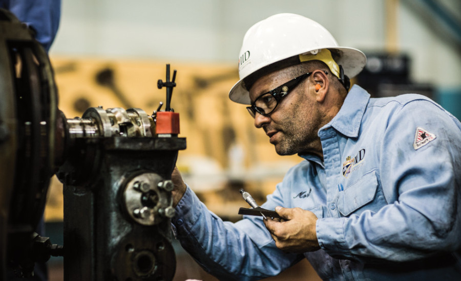
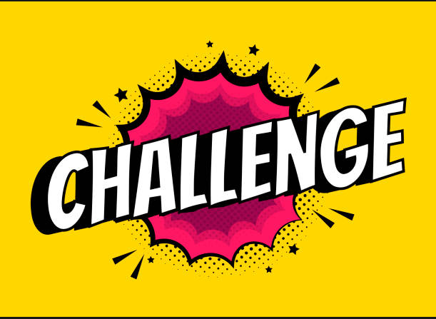
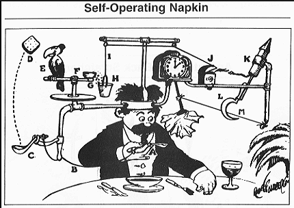
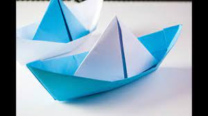
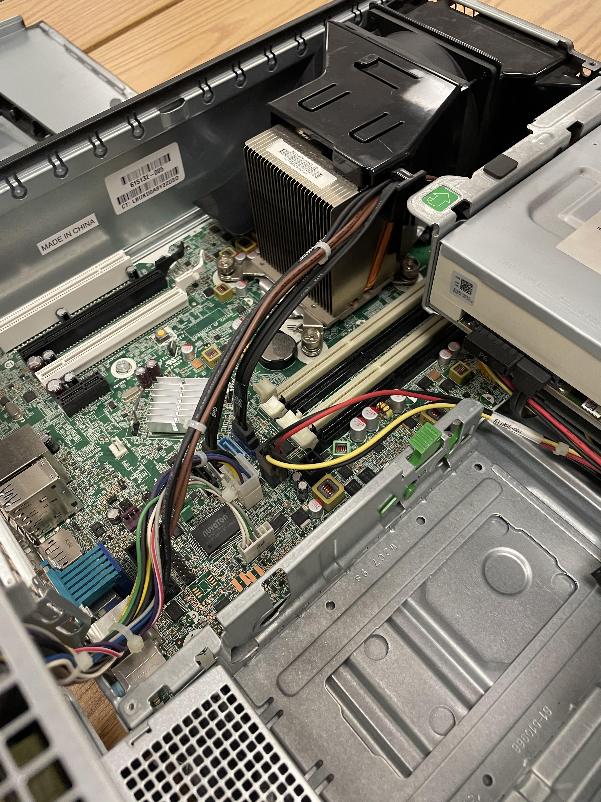
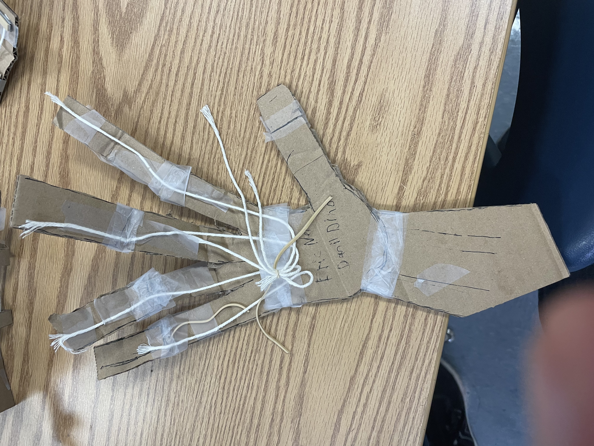
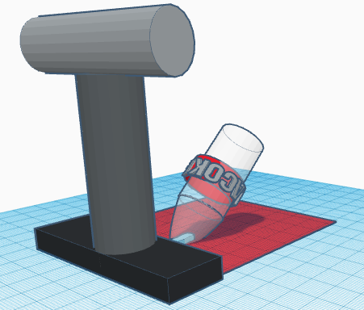
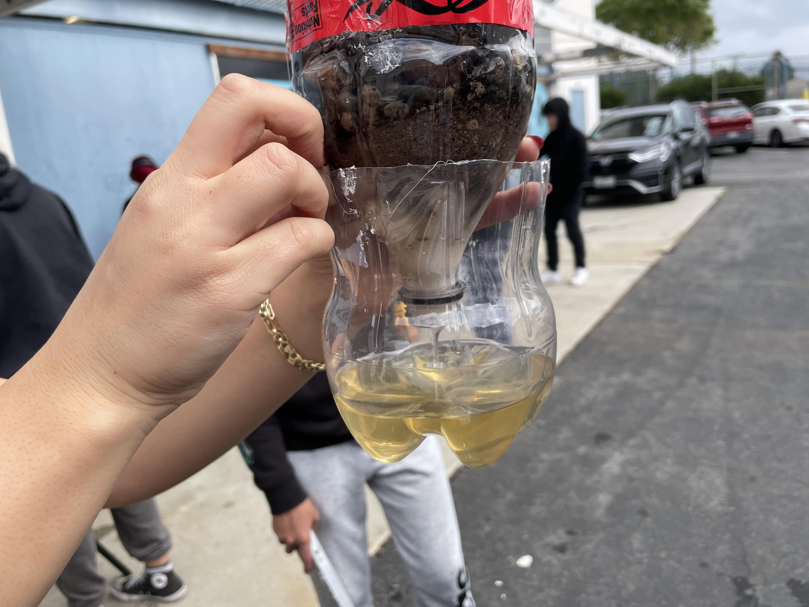
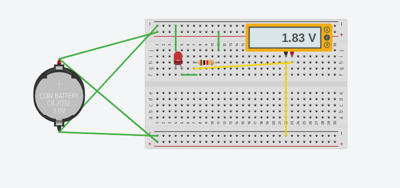

Week 1 8/21-8/25 - This is my first journal entry On the first week of school in intro to engineering class we learned how to acess our website. We were informed about how we have a Rudy Goldberg project. This will be our first project and some other assinments we will be doing are challenges to test our knowledge.The reason I chose Intro to engineering is because I thought that this class would be cool and we could build stuff. I didn't know that we would have to write a website or learn about differnet types of mechanics.

Week 2 8/28-9/1 - This is my second journal On the second week of school we did our first challenge. There were two teams and those two teams had to bring a marable into a bucket but it ended in a draw none of us could do it. We learned about all the differnt types of mechanics in the world and took our first test. Some of the type of mechanics are thermodyanmics which focus heat. Another one is fluid mechanics which focus on piping water to houses and other places.

Week 3 9/5-9/8 - This is my third journal On the Third week of school we worked more on our rude goldburg project. For this project we need to have 3 simple mechanics.Our project is going to have a incline plane then a pulley and then a lever. We also built a example of this on tinkercad. Our tinkercad is used to test if the project will work.

Week 4 9/11-9/15 - This is my fourth journal On the fourth week of school I finished working on the rude goldburg project. We had to make small adjustments so we could pop the ballon easier. Our rude goldburg project is made up of cardboard, tape, string, and love. The project ended up a success, we first pushed a baseball on the pulley then that lifted a wall holding back a car that had a needle on it which then rolled off the direct plane and popped the ballon. After that we worked on our websites for the rest of the week.
Week 5 9/18-9/22 - This is my fifth journal On the fifth week of school did 2 more challenges. The first one was making a paper boat out of 1 sheet of paper and tape. The goal was to make it float with as mush wieght as we could add. The second challenge was making measurements for a E and seeing if we could recreate it with the guesses mearsurments. Then we learned about the differnet types of computer programers such as software or hardware.

Week 6 9/25-9/29 - This is my sixth journal On the sixth week of school we learned about computer programers. We also disessambled a PC to see all the parts. We then reassembled it and tested if it would work and ours worked! We then did an assinment that was ment for us to look for what each piece of the computer was and place it in the correct spot. One of the many pieces are GPU,CPU,Ram,etc. Then we took a test about all of this information like the moore's law or all the types of storages such as gigabytes.

Week 7 10/2-10/6 - This is my seventh journal On the Seventh week of school we learned about bioengneering and we did a challenge about making a cardboard prothetic arm. Bioengineering is the application of principles of biology and the tools of engineering to create usable, tangible, economically-viable products. Making the cardboard arm taught me how arms work and how the process of making prothetics works. We then learned more of bioengneering like there careers such as biomechancics. Another thing I learned is all the organizations of bioengneering sush as ASB We then made a tinkercad of a prothetic limb for any animal we wanted and from this I learned that each individual creature needs a brand new differnt type of prothetic limb.

Week 8 10/9-10/13 - This is my eighth journal On the eighth week of school we learned about Aerospace Engineering and we started a project on a small scale rocket. Aerospace Engineering is The focus of Aerospace Engineering today revolves around the advancement of space exploration, aviation, and defense systems. Some jobs Aerospace Engineering offers are CAD technician or Design engineer. The four forces are weight, thrust, life, drag. Some Aerospace Companies are NASA, MEGGITT, and SpaceX. And the most important part of Aerospace engineering the salaries you would make a whooping 85k.

Week 9 10/16-10/20 - This is my nineth journal On the nineth week of school we started to work on our bottle rocket project. When we completed the project we lauched the rocket with water pressure and tested to see how far ours went. I learned that making rockets takes alot of calculaltions like what the wind is like or how heavy the material should weigh. I could've improved on the tip of the rocket or the wings. I also could have used better materials like duck tape instead of scotch tape. Another way I could've improved was using hot glue on the wings. While building I was building it realized how much work making a rocket would take to make because the rockets wings were very flabby and weak.
Week 10 10/23-10/27 - This is my tenth journal On the Tenth week of school we learned about Environmental Engineering. Environmental Engineering is the science and creaton of nature and the way to fix certain probelms like pollutions or volcanic eruptions. There are different types of pollutions there is water, air, light and noise. You can usally tell if something is polluted like water it can be black for heavily contanmited, or grey for slightly contamied, or white/transparent for clean drinking water. We also made a water filter. We used rocks,pebbles, cotton balls and sand as filteration. Then we put dirty water thourgh it but ours turned from a dirty black to a unclean yellow. From the water filter assinment I learned about how my drinkng water was made and filtered.

Week 11 10/30-11/3 - This is my eleventh journal On the eleventh week of school we learned about electrical engineering. Electrical engineering is the field of engineering, concerned with the study, designing, and use of appliances and equipment which use any form of electricity. We also learned how diodes, resisters, and circuit boards work. Resisters reduce the flow of current in a circuit, Diodes are one way switches, and circuit boards allow for design of circuits on a compact scale. We learned the differnce between parrel and series circut boards.In a series circuit, all components are connected end-to-end, forming a single path for electrons to flow. In a parallel circuit, all components are connected across each other. Another thing we learned is ohm's law which is V=IxR.
